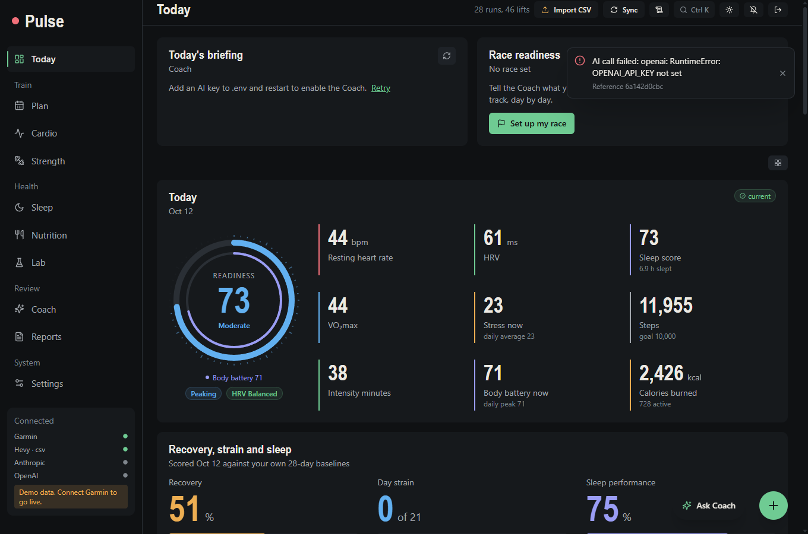
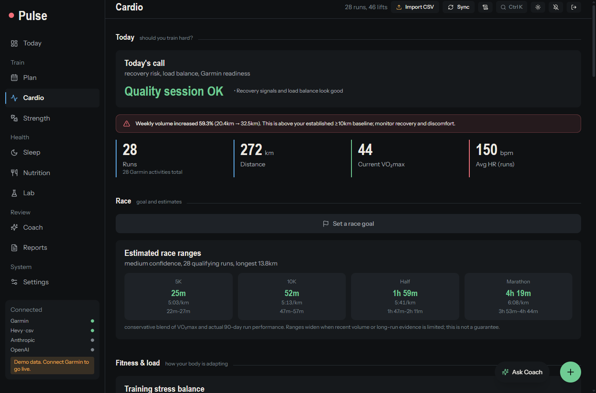
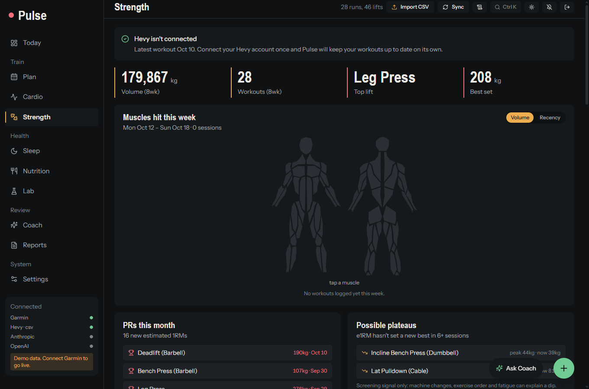
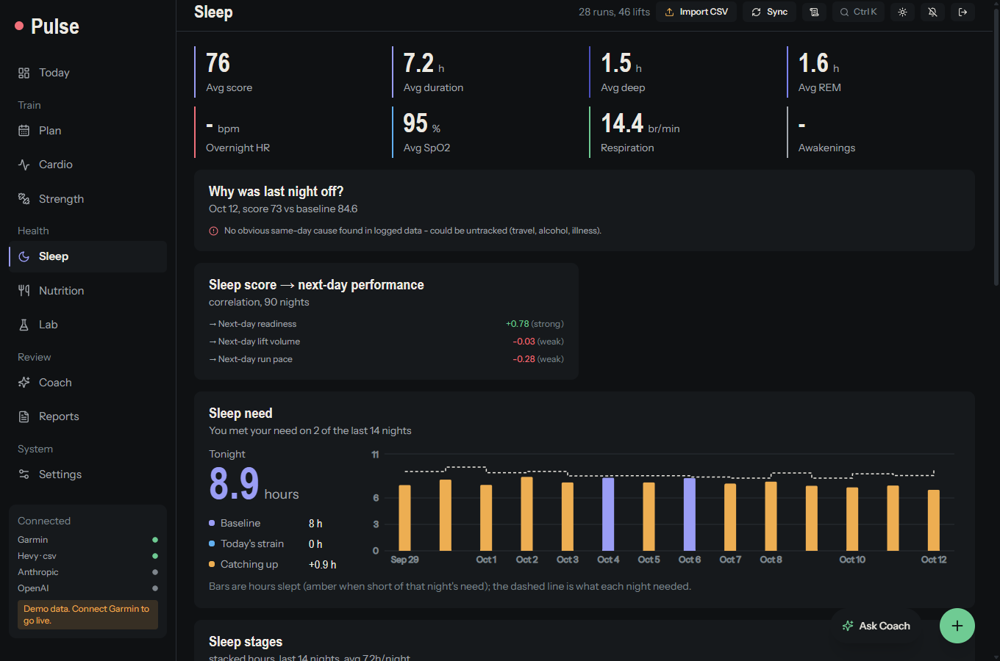

Pulse
Your Garmin sleep, recovery and runs, and your Hevy lifts, in one private dashboard. It reads your own numbers and tells you what today should be. It runs on your own computer; nothing is uploaded to anyone.
What it does
One call for today
Recovery scored from HRV, resting heart rate, breathing and sleep against your own 28-day baselines, plus a plan for the day.
Running, in depth
Race estimates, pace and heart-rate trends, load balance, route maps and a warning when weekly volume jumps too fast.
Lifting, from Hevy
Volume by muscle, progression, workout detail and a body map. Works with a free Hevy account, no Pro needed.
Sleep and recovery
Stages, sleep debt, sleep performance versus what you needed, and how it feeds tomorrow's readiness.
Nutrition and weight
Log meals fast from your phone, track macros against targets, and follow a weight trend or cut.
An AI coach that reads your data
Ask in plain words. It sees a compact summary of your last weeks, checks race readiness and respects injuries. Claude or GPT, with your own key.
A look around








On your phone


Install it to your Home Screen and open it from anywhere over a private network. Phone guide
Try it without connecting anything
Load the demo data: 90 days of invented sleep, runs and lifts, kept in its own local file. You need no Garmin account, no Hevy account and no API key. Show me how